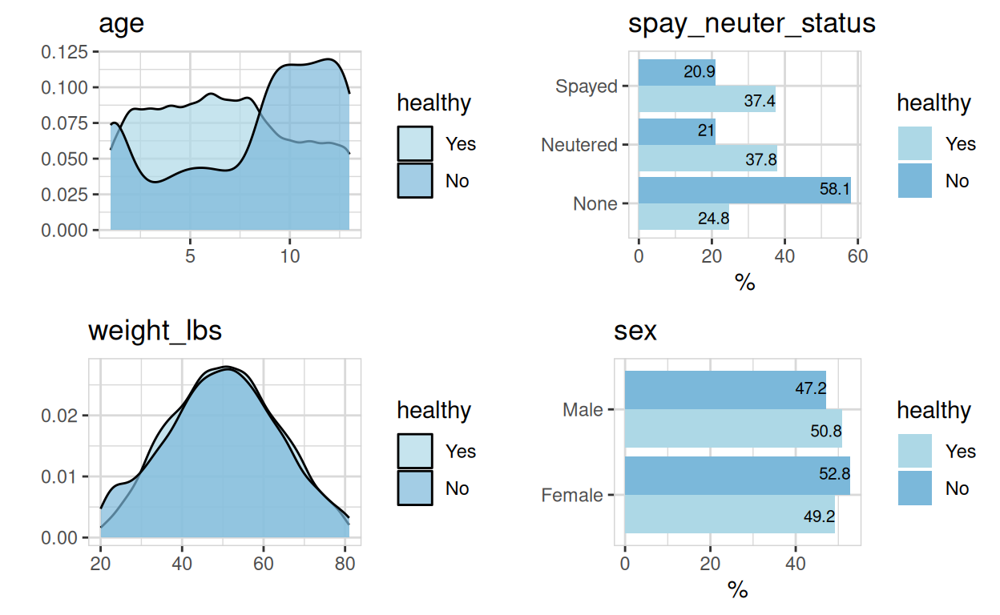
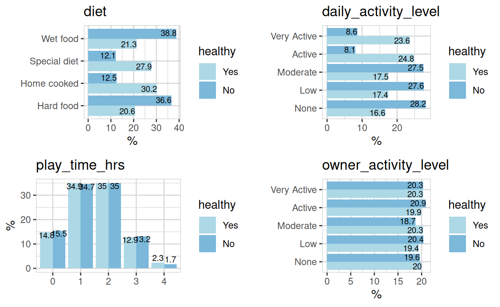
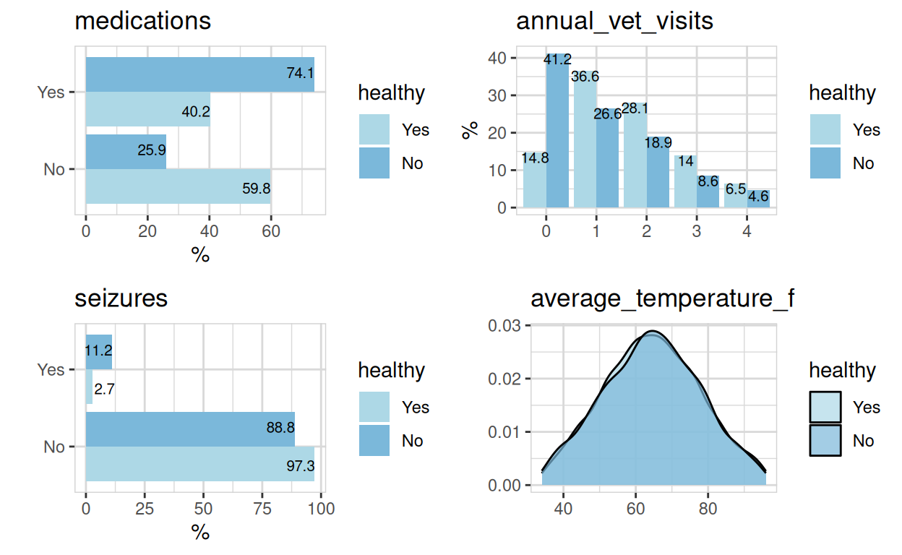
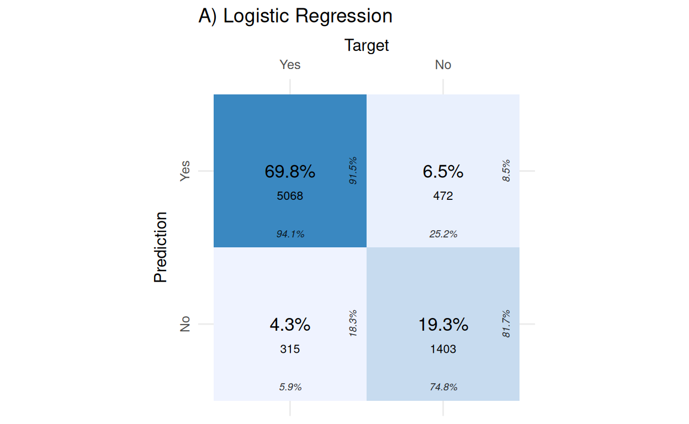
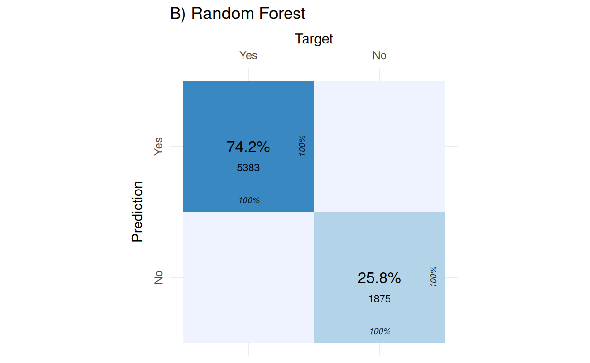
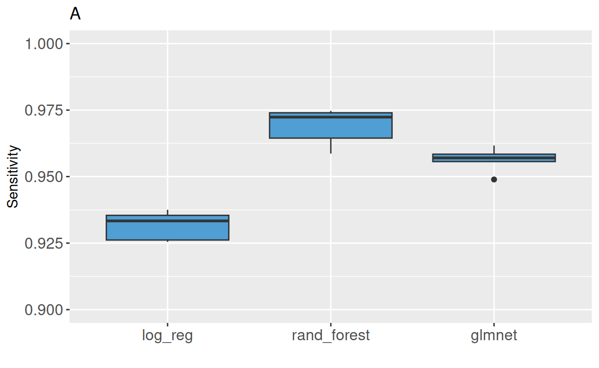
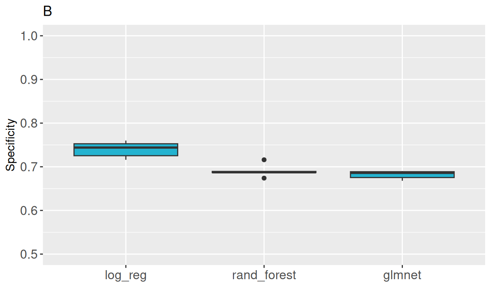
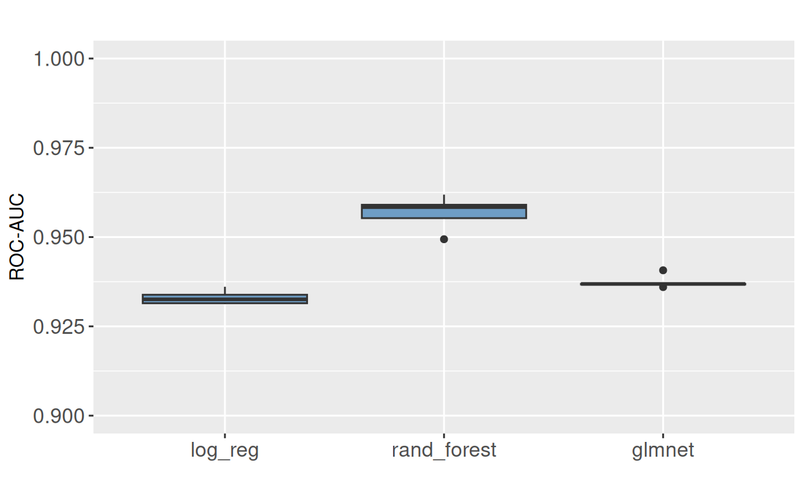
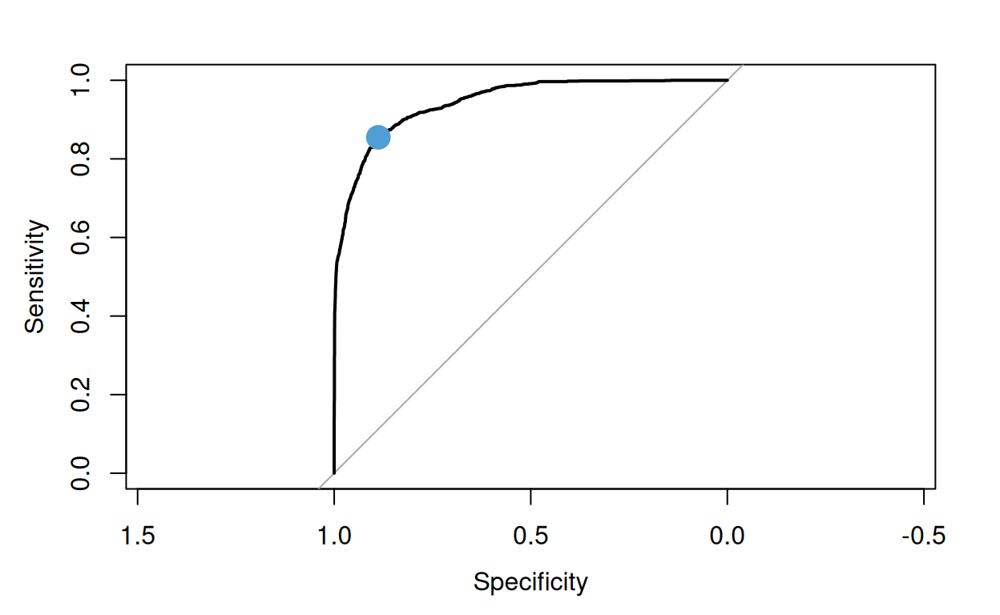

¿Más sabe el diablo por viejo…?
Modelos predictivos de aprendizaje automático
Imaginemos que tenemos una veterinaria y que lo largo de varios años hemos ido recogiendo datos de nuestros pacientes sobre sus características físicas, estilos de vida y algunos indicadores de salud. Al final de cada consulta veterinaria, añadimos a nuestra base de datos si el animal estaba sano o no, así como el diagnóstico. ¡Esto es una mina de oro!
Ahora, imaginemos que queremos ofrecer el mejor servicio posible a nuestros peludos y tal vez ofrecer un pack de análisis más profundo a aquellos que puedan estar en riesgo de enfermedad, aunque al llegar a la consulta parezcan estar bien. Identificar a los pacientes en riesgo de salud podría ayudarnos a mejorar las vidas de los animales (y sus dueños) a través de un diagnóstico temprano.
Para cumplir este objetivo generaremos un modelo predictivo de Aprendizaje automático. ¡Fácil!
🐶 Para nuestro modelo, la información histórica sobre características físicas, estilos de vida e indicadores de salud serán las variables predictoras. El estado de salud del animal, registrado tras la consulta, será la variable de respuesta: una “etiqueta” que clasifica a los animalitos en sanos o no sanos.
Crearemos nuestro modelo predictivo a través de una combinación de análisis de datos, modelado estadístico y uno o más algoritmos de aprendizaje automático, entrenándolos con nuestros datos históricos. Los algoritmos utilizarán estos datos para “aprender” sus patrones internos. Esto significa que el algoritmo ajustará sus parámetros (i.e. las variables matemáticas que lo componen), típicamente a través de un proceso de optimización como el descenso en gradiente, con el fin de minimizar las diferencias entre sus predicciones y los valores de la variable de respuesta reales. Este proceso es iterativo y, a través de decenas o cientos de repeticiones, va refinando la capacidad del modelo para reconocer patrones cada vez más finos y hacer predicciones cada vez más precisas.
🧑🏽⚕️ + 🐶 = ❤️ Una vez creado nuestro modelo, tan solo con llegar a llegar a la consulta y recoger sus datos generales, podríamos identificar a los animalitos con altas probabilidades de desarrollar problemas de salud, realizar diagnósticos tempranos y salvar vidas.
El Diablo Viejo - La regresión logística
Con el boom de la Inteligencia Artificial, algunos algoritmos predictivo básicos de Aprendizaje Automático, como la regresión logística, parecen estar siendo empujados al fondo de las estanterías. Están siendo reemplazados por algoritmos más modernos, poderosos y complejos, aunque en ocasiones también mucho más lentos.
Otra de las ventajas de nuestro Diablo Viejo es que una vez finalizado, el modelo arroja los valores matemáticos que explican cómo se relacionan las variables de entrada (las variables independientes) con la variable de salida (la variable de respuesta o dependiente). Esto contrasta con algoritmos más modernos (como el bosque de árboles aleatorios, random forest) que, una vez finalizados, son como una caja negra: podemos usarlos para hacer predicciones, pero desconocemos las relaciones entre las variables de entrada y salida que se utilizaron para la predicción. Este tema lo abordaremos en un próximo post.
🛣️ La Regresión Logística es un algoritmo predictivo rapidísimo y transparente; es posible que, dependiendo de nuestras aplicaciones, tenga un desempeño comparable al de otros algoritmos más modernos.
En este post también trabajaremos con la tabla de datos “Canine Wellness” de Kaggle.
Nuestro objetivo esta vez será crear y comparar el desempeño de distintos modelos de Aprendizaje Automático que nos permitan predecir el estado de salud de un animal (en este caso, un perro) a partir de diferentes variables.
La tabla de datos “Canine Wellness” es un conjunto de datos sintéticos que simulan las características de una amplia gama de razas de perros que reflejan la distribución natural de distintas variables físicas y de estilos de vida y de salud para distintas razas de perros. Las variables de esta tabla de datos son:
- raza (16 razas distintas)
- tamaño (pequeño, mediano, grande)
- sexo
- edad
- peso
- esterilización (sí/no)
- tipo de dieta (dura, húmeda, casera, especial)
- marca de comida (10 marcas distintas)
- nivel de actividad diaria (inactivo, bajo, moderado, alto, muy alto)
- distancia caminada diaria
- nivel de actividad diaria del propietario (inactivo, bajo, moderado, alto, muy alto)
- horas de sueño
- tiempo de juego
- otras mascotas en el domicilio (sí/no)
- medicación (sí/no)
- convulsiones (sí/no)
- número de visitas anuales al veterinario
- temperatura corporal media
- estado de salud (saludable/no saludable)La tabla de datos original requiere de una serie de manipulaciones (limpieza de datos) antes de que podamos aplicar cualquier algoritmo de Aprendizaje Automático (ver el script de programación). Algunos de los pasos de esta limpieza de datos son:
- Cambiar los nombres de las columnas de datos
- Convertir columnas datos que son caracteres en factores
- Eliminar columnas de datos innecesarias
- Reemplazar los valores ausentes de los casos incompletos usando el algortimo MICE
- Asignar una clase correcta a cada variable: numéricas, nominales u ordinales.Reemplazar los valores ausentes de los casos incompletos por estimaciones que no generen sesgos en la distribución original de los datos es especialmente delicado por lo que tenemos un post especial sobre este tema (“Esto está Lleno de Agujeros”).
Una vez que contamos con una tabla de datos limpia procedemos a crear una serie de modelos predictivos utilizando el flujo de trabajo del la metalibrería Caret de R.
👹 ¿Podrá el Diablo Viejo - la Regresión Logística - ponerse a la par de algoritmos más modernos y complejos?
Explorando nuestros datos
Como nos interesa la relación entre diferentes las variables y el estado de salud de los perros, nuestro primer paso es explorar cómo se relacionan las variables predictoras con nuestra variable de respuesta. Como el objetivo de este post no es realizar un análisis exploratorio exhaustivo, sólo mostraremos algunas variables interesantes.
Variables intrínsecas
La Figura 1 muestra una marcada influencia de la edad y estado de esterilización en el estado de salud de los animales. Otras variables como el peso o el sexo parecen tener apenas influencia en su estado de salud.

Figura 1. Relación del estado de salud (healthy, Yes/No) de los animales con algunas variables intrínsecas. Age, edad; spay_neuter_status, estado de esterilización (spay, esterilización de hembras; neuter, esterilización de machos); weight_lbs, peso en libras; sex, sexo.
Estilo de vida
La Figura 2 muestra que la dieta y el nivel de actividad de los animales tienen una influencia importante en el estado de salud de los perros, mientras que variables como el tiempo de juego y el nivel de actividad de los propietarios no parecen tener ninguna influencia.

Figura 2. Relación del estado de salud (healthy, Yes/No) de los animales con algunas variables de estilo de vida. Diet, dieta; daily_activity_level, nivel de actividad diaria; play_time_hrs, tiempo de juego en horas; owner_activity_level, nivel de actividad del propietario.
Indicadores de salud
La Figura 3 muestra que la presencia de medicamentos o convulsiones, así como el número de visitas veterinarias anuales, sí son indicativos del estado de salud de los perros, mientras que la temperatura media no lo es.

Figura 3. Relación del estado de salud (healthy, Yes/No) de los animales con algunos indicadores de salud. Medications, medicamentos; annual_vet_visits, número de visitas veterinarias anuales; seizures, convulsiones; average_temperature_f, temperatura media en Farenheit.
Creación de los distintos modelos predictivos
Para el análisis de este post, primero escalamos los datos para evitar sesgos asociados a las diferentes escalas de las variables numéricas: por ejemplo, el tiempo de juego tiene un rango de valores de 0-4 (horas), mientras que el peso tiene un rango de 20-80 (libras).
Antes de entrenar nuestros algoritmos predictivos, dividimos nuestros datos en conjuntos de entrenamiento y testeo en una proporción 75/100. Los datos de entrenamiento se usan para ajustar el modelo, mientras los de testeo sirven para evaluar su capacidad de generalizar los patrones aprendidos hacia datos no vistos.
Durante la fase de entrenamiento, usamos además validación cruzada (cross-validation) para evaluar la robustez de cada modelo sobre 5 particiones de datos.
Para el desarrollo de los distintos modelos de Aprendizaje automático, usamos el flujo de trabajo de la metalibrería Caret de R. Una ventaja de este flujo de trabajo es que nos permite aplicar de forma automatizada distintos valores a los parámetros internos de cada algoritmo (hiperparámetros) para optimizarlos a través de distintas iteraciones. En el caso específico de la regresión logística, al algoritmo es relativamente simple y no existen hyperpárametros que ajustar.
Breve presentación de los contendientes
La regresión logística es un método estadístico utilizado para modelar la probabilidad de que ocurra un evento. Se utiliza comúnmente en los problemas de clasificación binaria (como en nuestro caso, saludable/no saludable). La regresión logística se basa en la función logística:
\[ p(x) = \frac{1}{1 + e^{-x}} , \]donde p es la probabilidad de que un evento que ocurra (e.g., que un animal no esté sano), y x es una combinación lineal de las variables predictoras. El objetivo de la regresión logística es encontrar los valores de los coeficientes de x que minimicen la diferencia entre los resultados observados y probabilidades las probabilidades estimadas.
Los otros dos algoritmos analizados fueron el bosque de árboles aleatorios (random forest) y GLMNet.
El bosque de árboles aleatorios es un modelo de aprendizaje automático que utiliza múltiples árboles de decisión para hacer predicciones. Cada árbol en el bosque hace una predicción basada en los datos de entrada y la predicción final se hace combinando las predicciones de todos los árboles.
GLMNet es un modelo de aprendizaje automático que utiliza el Modelo Lineal Generalizado (GLM) para predecir resultados. GLMNet combina la regularización L1 (Lasso) y L2 (Ridge) en un único modelo, añadiendo un parámetro lambda para controlar la fuerza de la regularización L1 y un parámetro alpha para balancear entre L1 y L2.
El código que se muestra a continuación corresponde a la creación de cada modelo en el lenguaje de programación R, con una llamada al objeto myControl, que entre otras funciones, permite realizar la validación cruzada.
myControl <- trainControl( # Cross validation control
summaryFunction = twoClassSummary,
classProbs = TRUE, # collect probabilities
verboseIter = FALSE,
savePredictions = TRUE,
index = myFolds # call cross-validation data partitions
)
# Logistic regression model
model_logisticRegression <- train(
healthy ~. , #formula
data = training_data,
metric = "ROC",
method = "glm",
trControl = myControl # cross-validation
)
# Random forest model using the ranger package
set.seed(1976)
model_ranger <- train(
healthy ~. , #formula
data = training_data,
tuneLength = 5, # automatic hyperparameter optimization
metric = "ROC",
method = "ranger",
trControl = myControl # cross-validation
)
# GLMNet model
set.seed(1976)
model_glmnet <- train(
healthy ~. , #formula
data = training_data,
tuneLength = 5, # automatic hyperparameter optimization
metric = "ROC",
method = "glmnet",
trControl = myControl # cross-validation
)Comparación del desempeño de cada modelo
En un modelo predictivo de clasificación, como el nuestro, la principal herramienta para generar un gran número de medidas de desempeño es la matriz de confusión. Esta matriz de números es una tabla de contingencias que relaciona, en las filas, el número de predicciones positivas (en nuestro caso, un animal NO saludable) y negativas (un animal sano) acertadas, frente a las etiquetas reales en las columnas (Figura 4).

Figura 5. Diagrama de una matriz de confusión.
La Figura 5 muestra la matriz de confusión de los modelos de regresión logística (A) y bosque de árboles aleatorios (B) sobre los datos de entrenamiento con validación cruzada.


Figura 5. Matriz de confusión para dos de los modelos en la fase de entrenamiento con validación cruzada. A) Regresión logística (Logistic regression), B) bosque de árboles aleatorios (Random Forest). Yes = animal saludable; No = animal no saludable; Prediction, predicción; Target, etiqueta real.
Aunque a primera vista parece que el bosque de árboles aleatorios hace un trabajo muy superior al de la regresión logística, la Figura 5B revela en realidad una debilidad del bosque de árboles aleatorios y es que este algoritmo tiende al sobreajuste; lo que significa que el modelo aprende la estructura interna de los datos de entrenamiento de forma una forma tan precisa que luego falla en predicciones sobre datos nuevos no etiquetados.
⚠️ En Aprendizaje Automático, el sobreajuste indica que el modelo ha aprendido demasiado bien los patrones internos de los datos de entrenamiento (incluyendo ruido y patrones específicos de este conjunto de datos) y pierde la capacidad de generalización a datos nuevos.
Por ello, la mejor forma de evaluar el desempeño de nuestros modelos es graficar los valores de sensibilidad (i.e., la capacidad para identificar correctamente casos positivos) y especificidad (i.e., la capacidad para identificar correctamente casos negativos) obtenidos en CADA una de las 5 particiones datos de la validación cruzada, para así poder ver la variabilidad entre muestras. La Figura 6 muestra gráficos de caja y bigotes para la sensibilidad (A) y especificidad (B) de nuestros tres modelos predictivos.


Figura 6. Desempeño de los tres modelos predictivos en la fase de entrenamiento. El desempeño se midió por validación cruzada con 5 particiones de datos. A) sensibilidad (Sensitivity); B, especificidad (Specificity). Log_reg, regresión logística; rand_forest, bosque de árboles aleatorios; glmnet, algoritmo GLMNet.
La Figura 6 muestra que, con los datos de entrenamiento, los valores de sensibilidad son superiores para los modelos de bosque de árboles aleatorios y GLMNet, pero los valores de especificidad son superiores para la regresión logística. No observamos gran dispersión de los valores de sensibilidad y especificidad en ninguno de nuestros modelos, lo que es muy positivo y es en realidad lo que estamos buscando.
☝🏿️ Grandes dispersiones en los valores de sensibilidad y especificidad en la validación cruzada de un modelo son indicativas de sobreajuste.
Una medida adicional de desempeño es el área bajo la curva (AUC), que es un indicador de la capacidad de un modelo para discriminar entre clases. Esta medida tiene valores entre 0 y 1, donde 0.5 corresponde a una clasificación aleatoria de los datos y 1 a una clasificación perfecta. La Figura 7 muestra un gráfico de caja y bigotes para el área bajo la curva en nuestros tres modelos práredictivos.

Figura 7. Área bajo la curva (ROC-AUC) de los tres modelos predictivos en la fase de entrenamiento. El área bajo la curva se midió por validación cruzada con 5 particiones de datos. Log_reg, regresión logística; rand_forest, bosque de árboles aleatorios; glmnet, algoritmo GLMNet.
La Figura 7 muestra que, en la fase de entrenamiento, los tres modelos tienen valores de área bajo la curva muy cercanos a 1, lo que significa que tienen un alto poder de discriminación.
De camino hacia la prueba final
En modelos de clasificación, el umbral de decisión determina cuándo clasificar una predicción como positiva (en nuestro caso un animal NO sano) o negativa (un animal sano); la gran mayoría de los modelos de Aprendizaje Automático usan por defecto un umbral de decisión p = 0.5. En Aprendizaje Automático ajustar este umbral permite equilibrar sensibilidad y especificidad según las necesidades del problema: para maximizar la detección de casos positivos (sensibilidad) se reduce el umbral, para minimizar falsos positivos (mayor precisión) se aumenta. Para ajustar este umbral se utiliza una curva ROC graficando sensibilidad vs. especificidad, como se muestra en la Figura 8 para la regresión logística.

Figura 8. Gráfico de curva ROC para la regresión logística. El punto azul indica las coordenadas que corresponden al umbral de decisión (p) con el mejor balance entre especificidad y sensibilidad.
Una curva ROC se construye usando todos los valores de p estimados en la fase de entrenamiento del modelo como nuevos umbrales de decisión, calculando valores de sensibilidad y especificidad para CADA umbral (en nuestro modelo, 7259 umbrales en total). En la gráfica, se identifica el punto óptimo que equilibra maximiza sensibilidad y especificidad (el punto azul en la Figura 8) y se busca en la tabla de datos el valor de p que dio origen a las coordenadas de ese punto.
Los umbrales de decisión p óptimos, estimados a partir de las curvas ROC de cada modelo son:
- Regresión logística: 0.306122
- Bosque de árboles aleatorios: 0.3199726
- GLMNet: 0.4806667Usaremos estos umbrales de decisión optimizados en la fase final de la prueba: exponer cada modelo a casos que no ha visto antes, para los que sí conocemos el valor de la variable de respuesta, esto es el conjunto de datos de testeo (2420 casos).
La prueba final
En la prueba final usamos los modelos creados en la fase de entrenamiento para hacer predicciones sobre los datos de testeo. La Tabla 1 muestra los valores de sensibilidad y especificidad para los tres modelos ANTES de optimizar el umbral de decisión; es decir usando un umbral de decisión p = 0.5.
| Modelo | Métrica | Valor |
|---|---|---|
| B. de árboles aleatorios | sensibilidad | 0.837 |
| Regresión logística | sensibilidad | 0.733 |
| GLMNet | sensibilidad | 0.664 |
| B. de árboles aleatorios | especificidad | 0.982 |
| GLMNet | especificidad | 0.961 |
| Regresión logística | especificidad | 0.939 |
La Tabla 1 muestra que el modelo de árboles aleatorios arroja los valores más altos de sensibilidad y especificidad. En sensibilidad, la regresión logística ocupa el segundo lugar. En especificidad, el modelo GMLNet ocupa el segundo lugar.
La Tabla 2 muestra los valores de sensibilidad y especificidad para los tres modelos DESPUÉS de optimizar el umbral de decisión.
| Modelo | Métrica | Valor |
|---|---|---|
| GLMNet | sensibilidad | 0.878 |
| B. de árboles aleatorios | sensibilidad | 0.856 |
| Regresión logística | sensibilidad | 0.851 |
| B. de árboles aleatorios | especificidad | 0.975 |
| Regresión logística | especificidad | 0.895 |
| GLMNet | especificidad | 0.875 |
La Tabla 2 muestra que, tras la optimización, hay un cambio importante en los valores de sensibilidad y especificidad. Los tres modelos tienen valores muy similares de sensibilidad. Si bien, el modelo GLMNet tiene el valor más alto de sensibilidad, éste es apenas unas centésimas más alto que el de los otros dos modelos. La diferencia en sensibilidad entre la regresión logística y el bosque de árboles aleatorios es de apenas 5 milésimas. En cuanto a la especificidad, el bosque de árboles aleatorios ocupa el primer puesto, al menos 10 décimas por encima de los otros dos modelos.
Dentro de nuestro contexto, usaríamos la sensibilidad como principal medida de desempeño porque, dentro del contexto de salud animal, no detectar un caso positivo (un animal no saludable) podría tener consecuencias graves. La sensibilidad es también la principal medida de desempeño en contextos como el diagnóstico de enfermedades, la detección de fraude, la seguridad de sistemas etc.
🏁 Con nuestro conjunto de datos y tomando la sensibilidad como la métrica principal, los tres modelos tuvieron un desempeño comparable.
¿Y entonces… qué hacemos con el Diablo Viejo?…
La regresión logística tiene varias ventajas importantes sobre modelos más complejos como GMLNet y el bosque de árboles aleatorios:
Simplicidad e interpretabilidad. La regresión logística destaca por ser altamente interpretable. A diferencia del bosque de árboles aleatorios, donde la interpretabilidad del modelo no es directa, la regresión logística permite entender claramente cómo cada variable influye en la predicción (ver ¿Qué historias nos cuenta el Diablo Viejo? más adelante).
Eficiencia computacional. La regresión logística no requiere grandes recursos computacionales, tanto en la fase de entrenamiento como en la ejecución en contextos reales (e.g., una clínica veterinaria). Esto la hace ideal para aplicaciones con recursos limitados o cuando se necesitan predicciones en tiempo real.
En un ordenador con 32 GB de RAM, procesador AMD Ryzen 7 5825U (16 núcleos) a 4.55 GHz y ’ AMD Barcelo integrada, funcionando al máximo rendimiento, el tiempo de entrenamiento de un modelo de regresión logística, con validación cruzada de 5 partciones de datos y 7258 casos, fue de 1.01 segundo, frente a 59.53 segundos para el bosque de árboles aleatorios.
Cuando aumentamos el número de casos a 100.000, manteniendo constantes el resto de las condiciones, el tiempo de procesamiento de un modelo de regresión logística fue de 8.9 segundos, frente a un poco más de 10 minutos para el bosque de árboles aleatorios.
Probabilidades asociadas a la clasificación. La regresión logística no solo proporciona una clasificación final, sino también las probabilidades asociadas, lo cual permite tomar decisiones más informadas basadas en el nivel de confianza.
Menor riesgo de sobreajuste. Al ser un modelo lineal más simple, la regresión logística es menos propensa al sobreajuste que modelos complejos como bosque de árboles aleatorios, especialmente cuando disponemos de conjuntos de datos pequeños.
Requisitos de datos menos estrictos. La regresión logística no necesita una distribución normal de las variables, lo que la hace más flexible en términos de los datos que puede manejar.
A pesar de todas las ventajas de la regresión logística, el bosque de árboles aleatorios y otros modelos más complejos pueden ofrecer mejor rendimiento predictivo en problemas con relaciones no lineales complejas.
🚀 Teniendo en cuenta todas sus ventajas, la regresión logística se posiciona no solo como un buen punto de comparación con otros algoritmos más complejos, sino que además puede resultar ideal en entornos de trabajo que requieran predicciones inmediatas.
☝🏿 Y no hay que olvidar que, para mejorar el desempeño de la regresión logística, es necesario optimizar el valor de p para umbral de decisión a través de un gráfico tipo ROC.
¿Qué historias nos cuenta el Diablo Viejo?
Antes mencionamos que una de las grandes ventajas de la regresión logística, frente a modelos más complejos, es su interpretabilidad. Esto significa que a partir de los parámetros que componen el modelo podemos extraer información sobre cómo afecta cada variable al resultado de la clasificación; en nuestro caso, saludable vs. no saludable.
Si imprimimos un resumen de nuestro modelo de regresión logística obtendremos la siguiente información:
| Variable | Estimate | Std. Error | z value | Pr(>|z|) | |
|---|---|---|---|---|---|
| (Intercept) | -6.030138 | 0.955760 | -6.309 | 2.8e-10 | *** |
| breedBeagle | 1.111022 | 1.335297 | 0.832 | 0.4054 | |
| breedBoxer | -0.006634 | 0.225903 | -0.029 | 0.9766 | |
| breedBulldog | 0.154464 | 0.226623 | 0.682 | 0.4955 | |
| breedChihuahua | 1.077443 | 1.335458 | 0.807 | 0.4198 | |
| breedDachshund | 1.246879 | 1.331243 | 0.937 | 0.3490 | |
| breedDoberman | 0.015523 | 0.930747 | 0.017 | 0.9867 | |
| breedGerman Shepherd | 0.174363 | 0.935401 | 0.186 | 0.8521 | |
| breedGolden Retriever | 0.131661 | 0.934785 | 0.141 | 0.8880 | |
| breedGreat Dane | -0.374201 | 0.936887 | -0.399 | 0.6896 | |
| breedLabrador Retriever | 0.157153 | 0.933531 | 0.168 | 0.8663 | |
| breedPoodle | 1.309050 | 1.329031 | 0.985 | 0.3246 | |
| breedRottweiler | -0.077041 | 0.933759 | -0.083 | 0.9342 | |
| breedSiberian Husky | -0.211334 | 0.226225 | -0.934 | 0.3502 | |
| breedYorkshire Terrier | 1.258519 | 1.336455 | 0.942 | 0.3464 | |
| breed_sizeMedium | -0.156541 | 0.913281 | -0.171 | 0.8639 | |
| breed_sizeSmall | -1.310985 | 1.196273 | -1.096 | 0.2731 | |
| sexMale | -0.086975 | 0.084511 | -1.029 | 0.3034 | |
| age | 0.973208 | 0.047407 | 20.529 | < 2e-16 | *** |
| weight_lbs | -0.060466 | 0.042785 | -1.413 | 0.1576 | |
| spay_neuter_statusNone | 3.235299 | 0.122387 | 26.435 | < 2e-16 | *** |
| spay_neuter_statusSpayed | -0.044299 | 0.113685 | -0.390 | 0.6968 | |
| daily_activity_levelLow | 3.169269 | 0.159069 | 19.924 | < 2e-16 | *** |
| daily_activity_levelModerate | 3.231226 | 0.159344 | 20.278 | < 2e-16 | *** |
| daily_activity_levelNone | 3.401193 | 0.160140 | 21.239 | < 2e-16 | *** |
| daily_activity_levelVery Active | 0.050992 | 0.167326 | 0.305 | 0.7606 | |
| dietHome cooked | -1.825099 | 1.063226 | -1.717 | 0.0861 | . |
| dietSpecial diet | -2.955997 | 0.139530 | -21.185 | < 2e-16 | *** |
| dietWet food | 0.227113 | 0.106055 | 2.141 | 0.0322 | * |
| food_brandHill’s Science | 0.128000 | 0.190254 | 0.673 | 0.5011 | |
| food_brandIams | 0.019021 | 0.186388 | 0.102 | 0.9187 | |
| food_brandNutro | 0.030077 | 0.191268 | 0.157 | 0.8750 | |
| food_brandPedigree | 0.151757 | 0.185430 | 0.818 | 0.4131 | |
| food_brandPurina | 0.318071 | 0.192287 | 1.654 | 0.0981 | . |
| food_brandRoyal Canin | 0.345293 | 0.187711 | 1.839 | 0.0658 | . |
| food_brandSpecial | -1.166215 | 1.065591 | -1.094 | 0.2738 | |
| food_brandWellness | 0.026769 | 0.188666 | 0.142 | 0.8872 | |
| daily_walk_distance_miles | 0.060989 | 0.042124 | 1.448 | 0.1477 | |
| other_pets_in_householdYes | 0.092233 | 0.084677 | 1.089 | 0.2761 | |
| medicationsYes | 3.231464 | 0.111095 | 29.087 | < 2e-16 | *** |
| seizuresYes | 3.472854 | 0.194225 | 17.881 | < 2e-16 | *** |
| hours_of_sleep | -0.068657 | 0.042815 | -1.604 | 0.1088 | |
| play_time_hrs | -0.043835 | 0.042527 | -1.031 | 0.3026 | |
| owner_activity_levelLow | 0.118039 | 0.132418 | 0.891 | 0.3727 | |
| owner_activity_levelModerate | -0.039869 | 0.132623 | -0.301 | 0.7637 | |
| owner_activity_levelNone | -0.064499 | 0.134170 | -0.481 | 0.6307 | |
| owner_activity_levelVery Active | 0.023787 | 0.129710 | 0.183 | 0.8545 | |
| annual_vet_visits | -1.108042 | 0.051405 | -21.555 | < 2e-16 | *** |
| average_temperature_f | 0.056537 | 0.042423 | 1.333 | 0.1826 |
Aunque a primera vista estos datos parecen intimidantes, debemos centrar nuestra atención en las variables con asteriscos, ya que estas son las que contribuyen significativamente al valor de p estimado por el modelo que luego usamos para clasificar a los animalitos como saludables o no.
Como vemos en la tabla de arriba, las variables que son significativas se corresponden con aquellas que parecían tener mayor influencia en el estado de salud de los animales en nuestro análisis exploratorio (Figuras 1-3): edad (age); estado de esterilización (spay_neuter_status); nivel de actividad diaria (dalily_activity_level), para los niveles inactivo (none), bajo (low) y moderado (moderate); tipo de dieta (diet), especialmente las dietas húmedas (wet food) y dietas especiales (special diet); numero de visitas anuales al veterinario (annual_vet_visits) y presencia de medicación (medications) y convulsiones (seizures).
A diferencia de la regresión logística, los resúmenes de los modelos más complejos, como el bosque de árboles aleatorios o GLMNet son, en cambio, mucho menos informativos:
Resumen del bosque de árboles aleatorios:
| Variable | Length | Class | Mode |
|---|---|---|---|
| predictions | 14516 | -none- | numeric |
| num.trees | 1 | -none- | numeric |
| num.independent.variables | 1 | -none- | numeric |
| mtry | 1 | -none- | numeric |
| min.node.size | 1 | -none- | numeric |
| prediction.error | 1 | -none- | numeric |
| forest | 10 | ranger.forest | list |
| splitrule | 1 | -none- | character |
| treetype | 1 | -none- | character |
| call | 9 | -none- | call |
| importance.mode | 1 | -none- | character |
| num.samples | 1 | -none- | numeric |
| replace | 1 | -none- | logical |
| dependent.variable.name | 1 | -none- | character |
| max.depth | 1 | -none- | numeric |
| xNames | 48 | -none- | character |
| problemType | 1 | -none- | character |
| tuneValue | 3 | data.frame | list |
| obsLevels | 2 | -none- | character |
| param | 0 | -none- | list |
Resumen del modelo GLMNEt:
| Variable | Length | Class | Mode |
|---|---|---|---|
| a0 | 74 | -none- | numeric |
| beta | 3552 | dgCMatrix | S4 |
| df | 74 | -none- | numeric |
| dim | 2 | -none- | numeric |
| lambda | 74 | -none- | numeric |
| dev.ratio | 74 | -none- | numeric |
| nulldev | 1 | -none- | numeric |
| npasses | 1 | -none- | numeric |
| jerr | 1 | -none- | numeric |
| offset | 1 | -none- | logical |
| classnames | 2 | -none- | character |
| call | 5 | -none- | call |
| nobs | 1 | -none- | numeric |
| lambdaOpt | 1 | -none- | numeric |
| xNames | 48 | -none- | character |
| problemType | 1 | -none- | character |
| tuneValue | 2 | data.frame | list |
| obsLevels | 2 | -none- | character |
| param | 0 | -none- | list |
🔬 A diferencia de modelos más complejos, un simple resumen de un modelo de regresión logística nos dice de un vistazo qué variables son importantes para predecir nuestra variable de respuesta.
¿Hay historias más interesantes?
Conocer qué variables son importantes para predecir nuestra variable de respuesta es sin duda esencial para cualquier modelo predictivo; por ello, se han desarrollado múltiples herramientas para extraer esta información de modelos complejos, como el bosque de árboles aleatorios y GLMNet, cuyos resúmenes son más bien crípticos.
La librería DALEX de R nos permite extraer esta información de cualquier modelo, independientemente de su complejidad, al tiempo que nos ofrece la posibilidad de explorar en qué magnitud contribuye cada variable de entrada a la predicción de la variable de respuesta. Pero esto lo dejaremos para un próximo post.
Conclusiones
Para nuestro conjunto de datos (7258 casos de entrenamiento con 18 variables numéricas, ordinales y nominales) y contexto (i.e., priorizando evitar los falsos negativos) la regresión logística tuvo un desempeño similar al del bósque de árboles aleatorios y el algoritmo GMLNet. Resultados similares han sido documentados en la literatura científica (1)(2).
Para mejorar el desempeño de la regresión logística, es necesario optimizar el valor de p del umbral de decisión a través de un gráfico tipo ROC.
La regresión logística destaca por su rapidez, incluso con grandes volúmenes de datos.
El resumen de un modelo de regresión logística nos da información inmediata sobre las variables que son importantes para predecir nuestra variable de respuesta.
La rapidez y simplicidad de la regresión logística la convierten en un modelo predictivo de Aprendizaje Automático ideal para aplicaciones con recursos limitados o cuando se necesitan predicciones en tiempo real.
El código completo de este análisis está disponible en el repositorio de La Casa de Datos en Github.